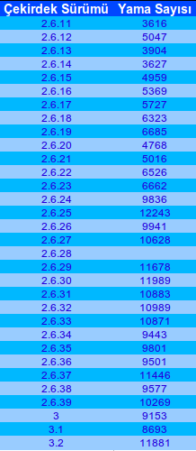
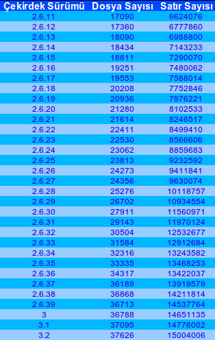
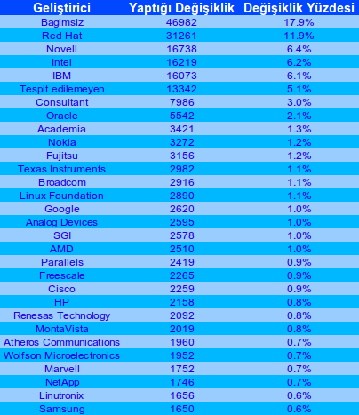

Linux Vakfı, bu ay Linux çekirdeğini geliştirme süreci üzerine bir rapor yayımladı. Rapora göre 7800’den fazla geliştirici çekirdeğe katkıda bulunuyor. Ve çekirdeğe kısa süreler içinde milyonla ifade edilen kod satırları ilave ediliyor.
Ne kadar hızlı gidiyor? Kim, ne yapıyor ve kim destekliyor?
Linux sisteminin temelini oluşturan çekirdek, şimdiye kadar kalkışılmış en büyük çok katılımcılı yazılım projelerinden birinin sonucudur. Her biri önemli yenilikler, artırılmış aygıt desteği ve iyileştirilmiş performans getiren 2-3 aylık sürümler, Linux kullanıcılarına kararlı güncellemeleri sağlar. Her çekirdek sürümüne giren 8000 ile 12000 arasında yama sayesinde, çekirdek değişim hızı yüksektir ve artmaya devam etmektedir. Bu sürümler 200’den fazla şirketi temsil eden 1000’den fazla geliştiricinin işlerini barındırır.
2005’ten bu yana, neredeyse 800’den dazla şirketten 7800’ün üzerinde geliştirici çekirdeğe katkıda bulunmuştur. Dolayısıyla, Linux çekirdeği başka alanlarda ezeli rakip olan şirketler tarafından büyük ölçekte geliştirilen ortak bir kaynak hâline gelmiştir.
Linux çekirdeği, bir Linux sistemde çalışan en alt seviye yazılımdır. Donanımı yönetmekten, kullanıcı programlarını çalıştırmaktan ve sistemin bütününün güvenlik ve uyumluluğunu sağlamaktan sorumludur. Tam bir Linux sistemde, (GNU, GNOME, KDE, X.org ve benzeri projelerden gelen pek çok büyük bileşenlerle) çekirdek, yazılımın sadece ufak bir parçasıdır; fakat sistemin ne kadar iyi çalışacağını belirleyen ve gerçekten sadece Linux’a özgü olan önemli bir parçadır.
2011 Çekirdek Geliştirme Sürecinden Öne Çıkanlar
- Linux çekirdeği, Linus Torvalds’ın 25 Ağustos 1991’de yaptığı ilk duyurunun ardından 20. yılını kutladı. Çekirdeğin ilk sürümü (0.01) Eylül 1991’de yayınlanmıştı.
- 2004’ten beri kullanımda olan 2.6.x numaralandırma şeması, 3.0 sürümü ile son buldu. 3.0’a geçilmesi için teknik bir neden bulunmuyordu. Basitçe 2.6 şemasının artık idaresinin güç olduğuna karar verildi.
- Microsoft ilk kez bir çekirdek sürümü için en çok katkı yapan 20 katkıcı listesinde yer aldı.
- Çekirdek geliştirme sürecinde dağıtım deposu ve ana depo olarak görev yapan kernel.org sitesi bir güvenlik açığı dolayısıyla birkaç hafta kapalı kaldı. 3.1 sürümü bu nedenle gecikti. Detaylı incelemeler sonrası çekirdekte bir değişiklik yapılmadığı sonucuna varıldı.
- Çekirdekte ARM mimarisi dalının durumu hakkında herkesçe bilinen bir patlama söz konusuydu (Çok fazla katkı yapılması sonucu kodun kalitesinin düşmesinden söz ediliyor patlama denilerek.). Yılın sonuna doğru bu kodun temizlenmesi çalışmaları iyice ilerlemişti.
- 1996 Haziran’ında 2.0 sürümü ile çekirdeğe simetrik çokluişlem desteği ve onunla birlikte korkulan çekirdek kilidi eklenmişti. 2011’de, neredeyse tam 15 yıl sonra, 2.6.39 çekirdek sürümü ile birlikte bahsedilen kilidin kaldırılması süreci tamamlandı.
- 2011 yılının sonunda bazı çekirdek sürümlerine uzun süreli destek sağlayarak gömülü aygıtlar için kararlı bir temel oluşturmak maksadıyla “Uzun süreli Destek Girişimi” duyuruldu.
Geliştirme Modeli
Linux çekirdeği, her 2-3 ayda bir çıkan büyük çekirdek sürümüyle, zaman temelli ve çok sıkı olmayan bir geliştirme süreci altında devam ediyor. 2005 yılında resmileştirilen bu model ile ana sürüm çekirdeğe yeni özellikler kazandırılarak kullanıcılara en az gecikme ile bu özellikler sağlanıyor. Bu model sayesinde geliştirme hızı artıyor ve dağıtıcıların yapması gereken harici değişikliklerin sayısı azalıyor. Bu da sonuç olarak dağıtıcıların çekirdeklerinin dağıtıma özgü barındırdıkları değişiklikleri azaltarak daha yüksek kaliteli ve dağıtımlar arasında daha az fark bulunduran bir çekirdek kullanılmasını sağlıyor.
Linus Torvalds’ın yaptığı her büyük sürümden sonra, çekirdeğin “kararlı takım”ında bulunan kişiler kısa süreli bakım görevini üstleniyor ve geliştirildikçe önemli değişiklikleri çekirdeğe ekliyor. Kararlı sürüm bakıcıları, önemli düzeltmelerin dağıtıcılara ve kullanıcılara sunulmasından ve bu değişikliklerin ileriki sürümlerde de çekirdeğe entegre edilmesinden sorumlu oluyor. En az iki geliştirme süreci (4-6 ay) boyunca devam eden kararlı çekirdek bakımı, bazen belirli çekirdek sürümleri için çok daha uzun sürebiliyor.
Sürüm Yayınlama Sıklığı
Konsensüs sonrası arzu edilen büyük çekirdek sürümü dönemi 8-12 ay olarak belirlenmiştir. Daha kısa süreler testçilere yeni sürümdeki problemleri bulmaları için yeterince zaman tanımazken, daha uzun süreler ise sürümler arasında yapılması gereken işlerin çok birikmesine neden olmaktadır. 2.6.11 sürümünden itibaren sürüm tarihçesi şöyledir:

Değişim Hızı
Geliştiriciler Linux çekirdeğine göndermek üzere işlerini hazırlarlarken, büyük değişikliklerini “yama” adı verilen küçük birimlere bölerler. Bu yamalar birbirleri ardısıra uygulandığında kaynak kodda ilgili satırları silerek, yeni satırlar ekleyerek ya da var olan satırları değiştirerek sadece bir tek görev yaparlar. Her yama tek başına uygulandığında çekirdeğin düzgün şekilde derlenmesi ve çalışması için gereken değişiklikleri içermelidir. Sürümler arasındaki yamalar aşağıdaki tabloda gösterilmiştir:

Yapılan yama sayısı ve sürümler arasındaki gün kullanılarak, saat başına çekirdeğe gönderilen ortalama yama sayısı hesaplandığında, 2.6.11 ve 3.2 çekirdek sürümleri arasında 4.3 sayısı elde edilecektir. Linux çekirdeği büyüdükçe, yapılan yama sayısı da büyümektedir.
Kararlı Güncellemeler
Büyük sürümler arası koda yapılan düzeltmelerin geldiği kararlı güncellemelerin adedi ve düzeltilen hata sayısı aşağıdaki tabloda verilmiştir:

2.6.32 sürümünün aldığı güncelleme sayısı bazı dağıtıcıların hâlâ bu sürümü kullanması dolayısıyladır. Yukarıda da değinildiği gibi gömülü aygıtlar için destek süresinin 2011 yılı itibarıyla iki seneye çıkarılması 3.0 sürümü ile başlayacaktır.
Kaynak Kod Büyüklüğü
Daha fazla donanım desteği ve yeni özellikler çekirdeğe eklendikçe, çekirdek de boyut olarak büyümektedir. Aşağıdaki tablo verilen çekirdek sürümleri için yazılan satır sayısını ve oluşturulan dosya adedini göstermektedir:

Görüldüğü gibi çekirdek, 2.6.11 sürümünden bu yana 8 milyon satır koddan fazla büyümüştür. 2010 güncellemesinden bu yana büyüme miktarı 1.5 milyon satırdır. 1991 yılında ilk sürümü çıktığında 10000 satır koddan oluştuğu düşünülürse, gelişimin ne kadar hızlı devam ettiği görülecektir.
Kimler katkı yapıyor?
Yazının girişinde 800’den fazla şirketten 7800’den fazla geliştiricinin çekirdeğe katkı verdiğinden bahsetmiştik. Her çekirdek sürümüyle katkı verenlerin sayısı da artmaktadır. Hatta son üç yılda bağımsız katkıcıların sayısı iki katına çıkmıştır. Son 5.5 yılda çekirdeğe en çok katkıda bulunan 10 geliştirici toplam çekirdeğin %9’unu oluşturmuştur. En çok katkıda bulunan 30 geliştirici göz önüne alındığında bu oran %20’ye çıkmaktadır. Aşağıdaki tablo 2.6.12’den bu yana git deposuna bakıldığında geliştiriciler ve yaptıkları değişiklerin sayısını vermektedir:

Linus Torvalds’ın en çok katkı yapan ilk 30 arasında bulunmaması eğlenceli bir gerçektir. 2.6.35’ten bu yana 231, toplamda 1113 değişiklik yapan Torvalds’ın çekirdeğe katkısı tabii ki yalnızca yaptığı değişiklikler ile ölçülemez. Kendisi hâlâ gelişim sürecinde aktif ve önemli bir rol üstlenmektedir.
Kim destek oluyor?
En çok değişiklikte bulunan 10 sponsor (bağımsız geliştiriciler ve tespit edilemeyenler de hesaba katıldığında) bütün çekirdeğin %60’ını oluşturuyor. Bir şirketle ilişkisi tespit edilemeyenler bağımsız katkıcı olarak sayılsa bile, tüm çekirdeğin %75’inden fazlasının bu iş için para alan geliştiriciler tarafından oluşturulduğu aşağıdaki tablodan görülebilir:

Sonuç
Linux çekirdeği projesi şimdiye kadar ortaya çıkmış açık kaynak projelerinin en başarılı ve en büyüklerinden biridir. Büyük değişim hızı ve katkı yapan bağımsız geliştiricilerin sayısı göstermektedir ki kullanıldığı farklı ortamların ihtiyaçlarına yanıt verecek şekilde sürekli değişen çekirdek, aktif ve canlı bir topluluğa sahiptir. Değişim hızı, katkı veren bağımsız geliştiricilerin ve şirketlerin sayısında olduğu gibi artmaya devam etmektedir. Bu da, geliştirme sürecinin ölçeklenebilir olduğunu kanıtlamıştır. Çekirdeği kullanan çoğu şirket geliştirmeye katılmasa bile, geliştirme işinin çoğunun şirketler tarafından yapıldığı görülmektedir. Linux’un sunucu, masaüstü ve gömülü aygıtlardaki kullanım alanının genişlemesi ile, katkıcı sayısının artması beklenmektedir.